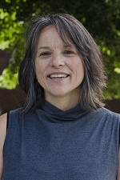
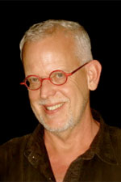
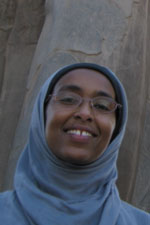

PhD
Culture + Teaching
This is a politically committed program dedicated to critical issues related to equity, democracy and social justice in education.
Interdisciplinary and collaborative, faculty and students engage in a variety of perspectives and methods in their study of education and schooling across broad social, cultural, and political contexts.
CaT graduates are poised to assume faculty positions in higher education as well as leadership roles in local, national, and international systems.
Priority deadline: December 1

Faculty
Professor
Nina Asher
Postcolonial and feminist theory | Globalization | Critical perspectives on multiculturalism | Asian American studies and education Nina's profile
Associate Professor
Vichet Chhuon
Race | Poverty | Urban education | Culturally relevant pedagogy | Teaching as a relational process | Diversity in teacher education Full profile

Associate Professor
Mary Hermes
Indigenous language revitalization | Multimedia technology and language learning Full profile

Associate Professor
Timothy J. Lensmire
Teaching and learning of writing as a form of democratic living | How white people learn to be white in our white supremacist societ. Full profile
Associate Professor
Bic Ngo
"Culture" + "difference" in immigrant students' education | How we theorize immigrant identity, culturally relevant pedagogy, and anti-oppressive education. Full profile
Associate Professor
Mistilina Sato
How teachers learn and develop their instructional practices, leadership, and teacher identities | Teacher education program design | Performance assessment for teachers | Teacher evaluation and policy | Assessment for learning integrated in science instruction | School science cultures Full profile

Professor
Thom Swiss
Interdisciplinarity in research + teaching | Popular culture | Digital media | Creative writing. Full profile

Post-Doctoral Associate
Nimo Abdi
Immigrants | Refugees | Islam | Urban Education | Student Identities | and Communities Full profile
Outline
Curriculum
Our curriculum requires students to consider the power and privilege that shape disparate opportunities in education by race, class, and gender.
For example, some courses examine the implications of globalization and immigration for teaching, learning and curriculum; others examine the salience of understanding white racial identity for pedagogy and social change; and, other courses explore popular culture and media in relation to contemporary critical theory and teaching practices.
“Teaching” in CaT includes thinking about how, as educational leaders and researchers in and outside of the classroom, we might take up radical democratic forms of life with our fellow learners.
Students enrolled in other tracks within the Department of Curriculum and Instruction may also choose to pursue a supporting program in CaT.
The following courses are required:
- CI 8131 – CI Core: Critical examination of curriculum in context
- CI 8132 – CI Core: Teaching theory and research
- CI 8133 – Research Methods in CI
- CI 8148 – Conducting Qualitative Studies in Educational Contexts
- OLPD 8812 – Qualitative Research in Education
- CI 8159 – Culture and Teaching Colloquium (to be taken twice for a total of 6 cr.)
- A minimum of 9 additional credits in qualitative, quantitative or mixed method
You will also complete:
- 15 credits in your track
- 12 credits from outside your track (if pursuing a minor or supporting program)
Total: 54 course credits + 24 thesis credits = 78
Opportunities
Funding
Support is available in the form of:
- Teaching Assistantships. The majority work as student teaching supervisors for M.Ed. initial licensure students. Daytime availability, a teaching license, and teaching experience are required
- Research Assistantships
- Fellowships. Based on a departmental nomination process. You will be notified by the Director of Graduate Studies if you are being considered for a fellowship
A typical tull benefits assistantship (tuition, health insurance + stipend) 20 hours/week at approximately $18/hour. Benefits are pro-rated based on the appointment percentage.
Have a complete application in by December 1 to be considered for these positions for the following academic year.
While support is not guaranteed, we make every attempt to financially support full-time students through completion. You may also explore assistantships available outside our department on the University's employment page.
Credit for past work
Transfer credits
M.A. students must complete at least 60% of coursework (not including thesis credits) within our program. PhD students may transfer no more than 15 credits from an outside institution.
A maximum of 12 graduate course credits taken as non-degree seeking or non-admitted status at the University of Minnesota can be transferred--this is counted separately from the maximum 60%, or 15 outside institution credits.
For example, a PhD student could transfer a maximum of 27 credits (15 outside + 12 non-degree from UMN).
If you earned a M.A. at the UMN, please contact the Graduate Studies Coordinator to discuss transfer procedures.
Thesis credits cannot be transferred.
After you are admitted, you will work with your adviser to determine which credits may transfer.
Graduate Studies Coordinator
Kristina Pearson
cigs@umn.edu
Fax: (612) 624.8277
125H Peik Hall
Office hours 8:00 - 3:30